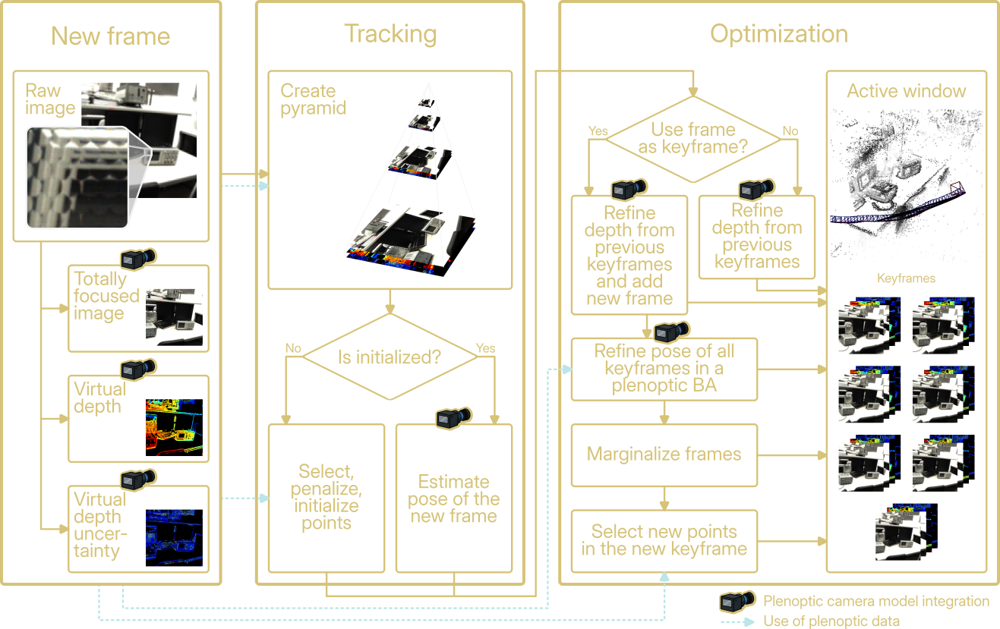

Abstract
We introduce PRISM-VO, a novel pure optimization-based sparse photometric visual odometry framework for focused plenoptic cameras. The core of PRISM-VO is a novel photometric plenoptic bundle adjustment which jointly optimizes camera poses and inverse depth values of points in a sliding window. By combining geometric depth from a single plenoptic image with temporal multi-view constraints, PRISM-VO achieves accurate and drift-resilient motion estimation. Through explicit modeling of the plenoptic projection, PRISM-VO provides reliable metric-scale reconstructions, overcoming the scale ambiguity of monocular SLAM algorithms. Importantly, our approach relies solely on a single plenoptic sensor and avoids complex initialization, as depth priors are computed directly from plenoptic imaging.
Experiments show that PRISM-VO outperforms the current state-of-the-art plenoptic visual odometry method on indoor and outdoor scenes. The proposed approach rivals other optimization- and learning-based methods while accurately and reliably recovering a metric scale of the scene.
Pipeline

Results
We evaluate PRISM-VO on the dataset "A Synchronized Stereo and Plenoptic Visual Odometry Dataset" [1]. The following videos show representative trajectories reconstructed by our method.
We additionally evaluate PRISM-VO on the dataset "LiFMCR" [2], which contains sequences captured by other types of cameras.
[1] Zeller, N., Quint, F., Stilla, U.: A Synchronized Stereo and Plenoptic Visual Odometry Dataset. 2018.
[2] Fleith, A., Zirbel, J., Cremers, D., Zeller, N.: LiFMCR: Dataset and Benchmark for Light Field Multi-Camera Registration. International Symposium on Visual Computing (ISVC), Springer, 2026.
BibTeX
@inproceedings{Fleith2026PRISMVO,
title = {PRISM-VO: Scale-Aware Visual Odometry Using Photometric Plenoptic Bundle Adjustment},
author = {Fleith, Aymeric and Zirbel, Julian and Cremers, Daniel and Zeller, Niclas},
booktitle = {European Conference on Computer Vision (ECCV)},
year = {2026},
publisher = {Springer}
}